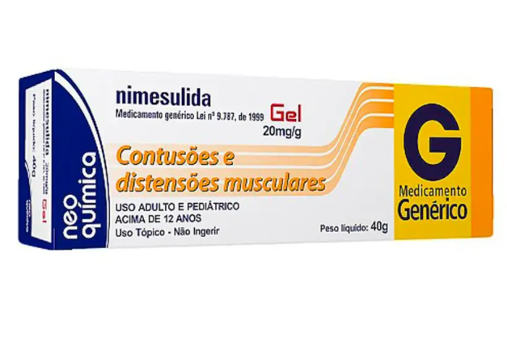

Nimesulida 20mg Neo Química Gel com 40g
Nimesulida
Vendido e entregue porDrogasil
- Combate inflamação, dor e febre.
- Inibe enzima relacionada à inflamação.
- Alívio da dor em aproximadamente 15 minutos.
- Efeito na febre dura cerca de 6 horas.
R$ 23,85
Compre aqui!
Descrição
A nimesulida é um medicamento que apresenta propriedades que combatem a inflamação, a dor e a febre, e sua atividade anti-inflamatória envolve vários mecanismos. A nimesulida inibe uma enzima chamada ciclooxigenase, a qual esta relacionada à produção de uma substância chamada prostaglandina, tal inibição faz com que a dor e a inflamação diminuam. O tempo médio estimado para início da ação depois que você tomar nimesulida é de 15 minutos para alívio da dor. A resposta inicial para a febre acontece cerca de 1 a 2 horas após o uso do medicamento e dura aproximadamente 6 horas.